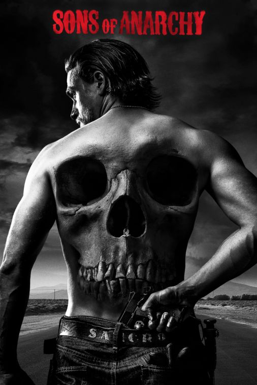

Serien utspelar sig på de fiktiva kontinenterna Westeros och Essos där somrarna och vintrarna kan pågå i åratal. Game of Thrones har tre stora berättelselinjer och en stor grupp skådespelare. Den första berättelselinjen handlar om Järntronen av de sju kungadömena i Westeros.

Året är 1919. Ett ökänt gäng i brittiska Birmingham leds av den fruktade Tommy Shelby, som är fast besluten att ta sig upp i världen, kosta vad det kosta vill.

Sons of Anarchy är en amerikansk TV-serie skapad av Kurt Sutter om en tätt sammansluten kriminell motorcykelklubb i staden Charming i norra Kalifornien. Serien är centrerad kring protagonisten Jackson "Jax" Teller (Charlie Hunnam), klubbens vicepresident, som börjar ifrågasätta både klubben och sig själv.
Serien handlar om kemiläraren Walter White (spelad av Bryan Cranston), som efter att ha fått diagnosen lungcancer vill skapa ekonomisk trygghet för hustru och barn innan han dör och därför använder sina kemikunskaper till att börja producera och sälja metamfetamin med hjälp av den tidigare eleven Jesse Pinkman (spelad ...

I The Mandalorian får vi följa prisjägaren Din Djarin som under ett av sina uppdrag stöter på den bedårande Baby Yoda. Han bestämmer sig för att ta med och skydda honom och inser snart att han är en väldigt speciell varelse med starka krafter.